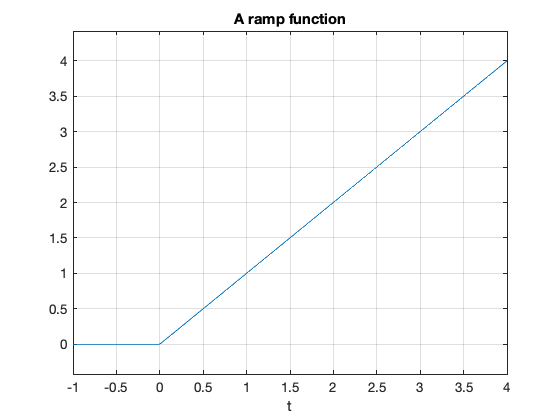

Lecturer: Clear all the cells and set up MATLAB
format compact
clear all
Elementary Signals
The preparatory reading for this section is Chapter 1 of Karris which
- begins with a discussion of the elementary signals that may be applied to electrical circuits
- introduces the unit step, unit ramp and dirac delta functions
- presents the sampling and sifting properties of the delta function and
- concludes with examples of how other useful signals can be synthesised from these elementary signals.
An annotatable copy of partial notes and in-class examples for this presentation will be distributed before the first class meeting as Worksheet 3 the handouts section for week 1 of the _Content Library of the OneNote Class Notebook. You can also view the notes for this presentation as a webpage (HTML) and as a downloadable PDF file.
Consider the network shown below, where the switch is closed at time $t=T$.

Express the output voltage $v_{\mathrm{out}}$ as a function of the unit step function, and sketch the appropriate waveform.
Solution
Before the switch is closed at $t < T$,
After the switch is closed for $t > T$,
We imagine that the voltage jumps instantaneously from 0 to $V_s$ volts at $t = T$ seconds.

We call this type of signal a step function.
The Unit Step Function

In Matlab
In Matlab, we use the heaviside function (Named after Oliver Heaviside).
%%file plot_heaviside.m
syms t
ezplot(heaviside(t),[-1,1])
heaviside(0)
Created file '/Users/eechris/dev/eg-247-textbook/content/elementary_signals/plot_heaviside.m'.
plot_heaviside
ans =
0.5000

Note that, so that it can be plotted, Matlab defines the heaviside function slightly differently from the mathematically ideal unit step:
Simple Signal Operations
Amplitude Scaling
Sketch $Au_0(t)$ and $-Au_0(t)$
syms t;
u0(t) = heaviside(t); % rename heaviside function for ease of use
A = 2; % so signal can be plotted
ezplot(A*u0(t),[-1,1]),grid,title('Applitude scaling $$Au_0(t)$$','interpreter','latex')

Note that the signal is scaled in the $y$ direction.
ezplot(-A*u0(t),[-1,1]),grid,title('Amplitude scaling and mirroring $$-Au_0(t)$$','interpreter','latex')

Note that, because of the sign, the signal is mirrored about the $x$ axis as well as being scaled by 2.
Time Reversal
Sketch $u_0(-t)$
ezplot(A*u0(-t),[-1,1]),grid,title('Time reversal $$Au_0(-t)$$','interpreter','latex')

The sign on the function argument $-t$ causes the whole signal to be reversed in time. Note that another way of looking at this is that the signal is mirrored about the $y$ axis.
Time Delay and Advance
Sketch $u_0(t-T)$ and $u_0(t+T)$
T = 1; % again to make the signal plottable.
ezplot(u0(t - T),[-1,2]),grid,title('Time delay $$u_0(t - T)$$','interpreter','latex')

This is a time delay … note for $u_0(t - T)$ the step change occurs T seconds later than it does for $u_o(t)$.
ezplot(u0(t + T),[-2,1]),grid,title('Time advance $$u_0(t + T)$$','interpreter','latex')

This is a time advance … note for $u_0(t + T)$ the step change occurs T seconds earlier than it does for $u_o(t)$.
Examples
We will work through some examples in class. See Worksheet 3.
Synthesis of Signals from the Unit Step
Unit step functions can be used to represent other time-varying functions such as rectangular pulses, square waves and triangular pulses. See Worksheet 3 for the examples that we will look at in class.
The Ramp Function

In the circuit shown above $i_s$ is a constant current source and the switch is closed at time $t=0$.
When the current through the capacitor $i_c(t) = i_s$ is a constant and the voltage across the capacitor is
where $\tau$ is a dummy variable.
Since the switch closes at $t=0$, we can express the current $i_c(t)$ as
and if $v_c(t) = 0$ for $t < 0$ we have
So, the voltage across the capacitor can be represented as
To sketch the wave form, let’s arbitrarily let $C$ and $i_s$ be one and then plot with MATLAB.
C = 1; is = 1;
vc(t)=(is/C)*t*u0(t);
ezplot(vc(t),[-1,4]),grid,title('A ramp function')

This type of signal is called a ramp function. Note that it is the integral of the step function (the resistor-capacitor circuit implements a simple integrator circuit).
The unit ramp function is defined as
so
and
Note
Higher order functions of $t$ can be generated by the repeated integration of the unit step function.
For future reference, you should determine $u_2(t)$, $u_3(t)$ and $u_n(t)$ for yourself and make a note of the general rule:
Details are given in equations 1.26—1.29 in Karris.
The Dirac Delta Function

In the circuit shown above, the switch is closed at time $t=0$ and $i_L(t)=0$ for $t<0$. Express the inductor current $i_L(t)$ in terms of the unit step function and hence derive an expression for $v_L(t)$.
Solution
Because the switch closes instantaneously at $t=0$
Thus
To solve this problem we need to invent a function that represents the derivative of the unit step function. This function is called $\delta(t)$ or the dirac delta function (named after Paul Dirac).
The delta function
The unit impulse or the delta function, denoted as $\delta(t)$, is the derivative of the unit step.
This function is tricky because $u_0(t)$ is discontinuous at $t=0$ but it must have the properties
and
Sketch of the delta function

MATLAB Confirmation
syms is L;
vL(t) = is * L * diff(u0(t))
vL(t) =
L*is*dirac(t)
Note that we can’t plot dirac(t) in MATLAB with ezplot.
Important properties of the delta function
Sampling Property
The sampling property of the delta function states that
or, when $a = 0$,
Multiplication of any function $f(t)$ by the delta function $\delta(t)$ results in sampling the function at the time instants for which the delta function is not zero.
The study of descrete-time (sampled) systems is based on this property.
You should work through the proof for youself.
Sifting Property
The sifting property of the delta function states that
That is, if multiply any function $f(t)$ by $\delta(t-\alpha)$, and integrate from $-\infty$ to $+\infty$, we will get the value of $f(t)$ evaluated at $t=\alpha.$
You should also work through the proof for yourself.
Higher Order Delta Fuctions
the nth-order delta function is defined as the nth derivative of $u_0(t)$, that is
The function $\delta’(t)$ is called the doublet, $\delta’‘(t)$ is called the triplet and so on.
By a procedure similar to the derivation of the sampling property we can show that
Also, derivation of the sifting property can be extended to show that
Summary
In this chapter we have looked at some elementary signals and the theoretical circuits that can be used to generate them.
Takeaways
- You should note that the unit step is the heaviside function $u_0(t)$.
- Many useful signals can be synthesized by use of the unit step as a “gating function” in combination with other signals
- That unit ramp function $u_1(t)$ is the integral of the step function.
- The Dirac delta function $\delta(t)$ is the derivative of the unit step function. We sometimes refer to it as the unit impulse function.
- The delta function has sampling and sifting properties that will be useful in the development of time convolution and sampling theory.
Examples
We will do some of these in class. See worksheet3.
Homework
These are for you to do later for further practice. See Homework 1.